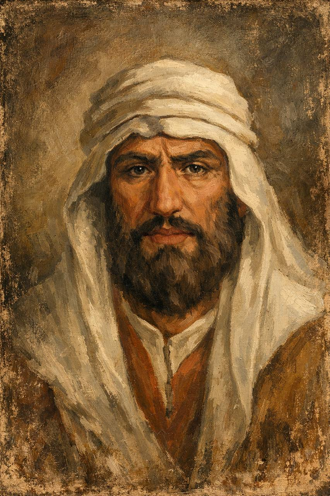
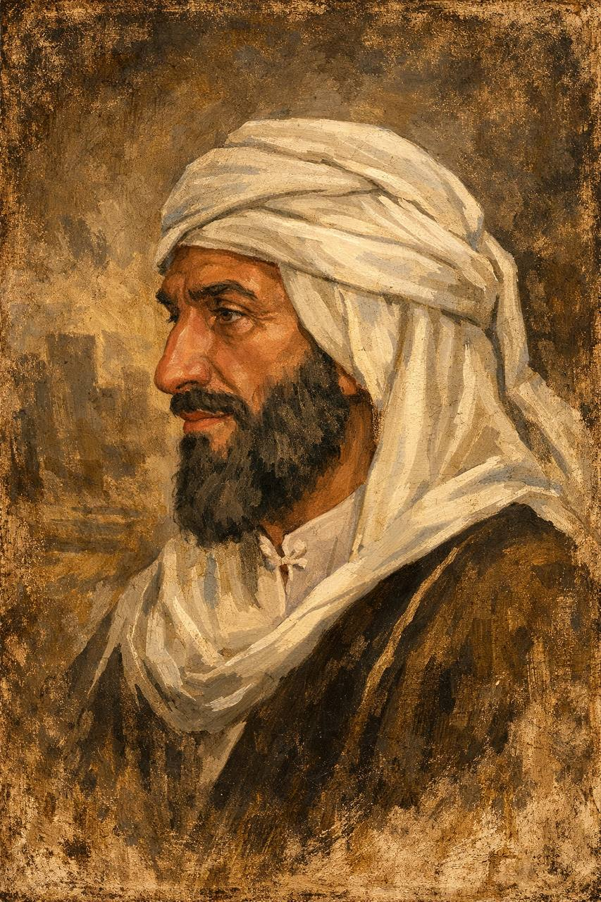
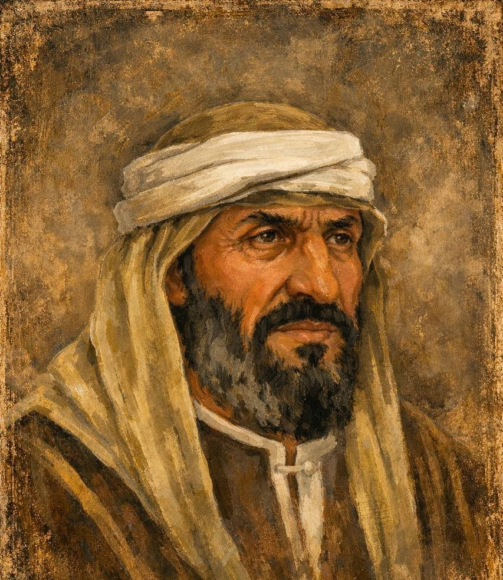
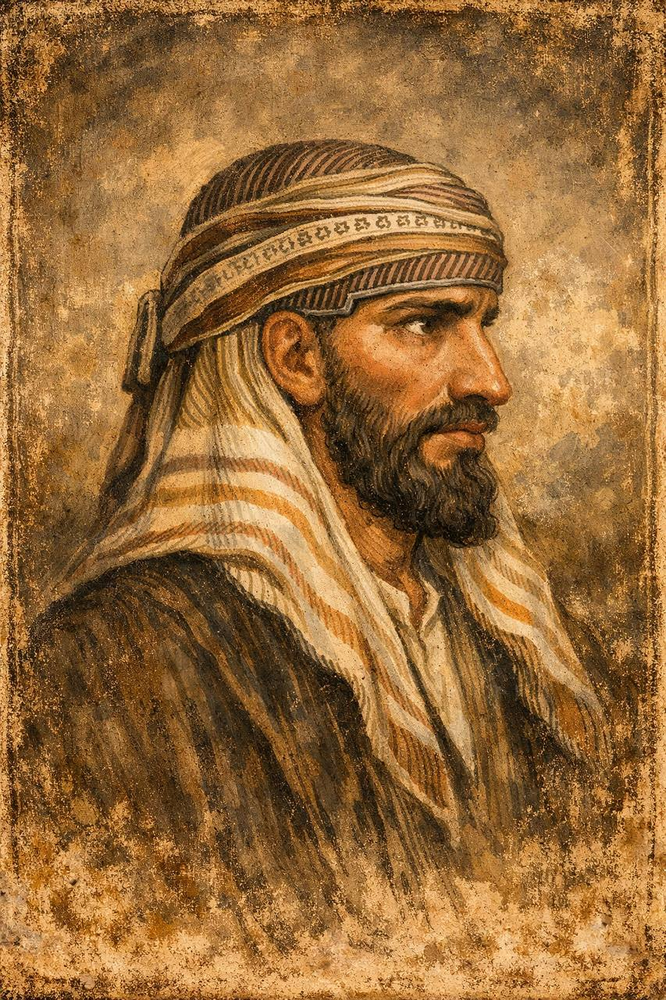
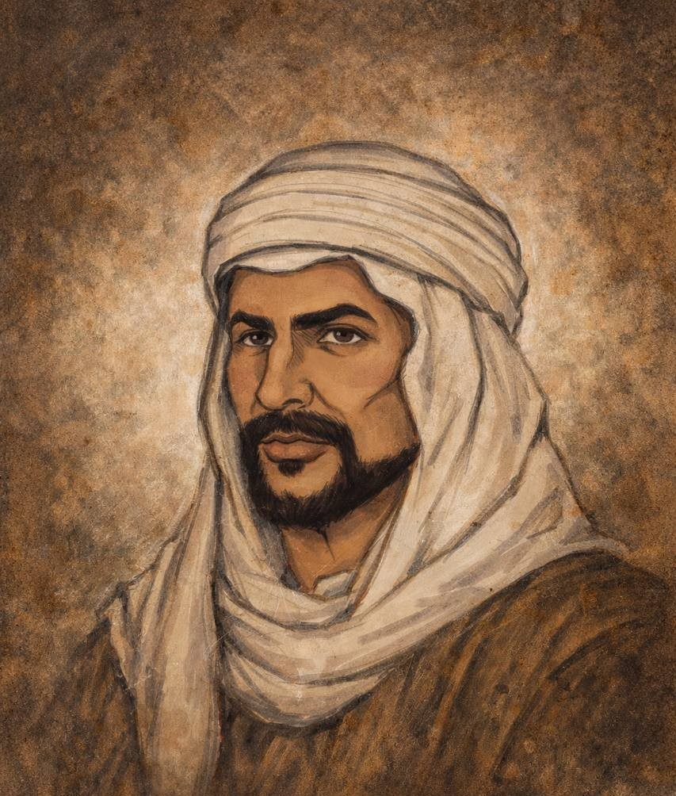
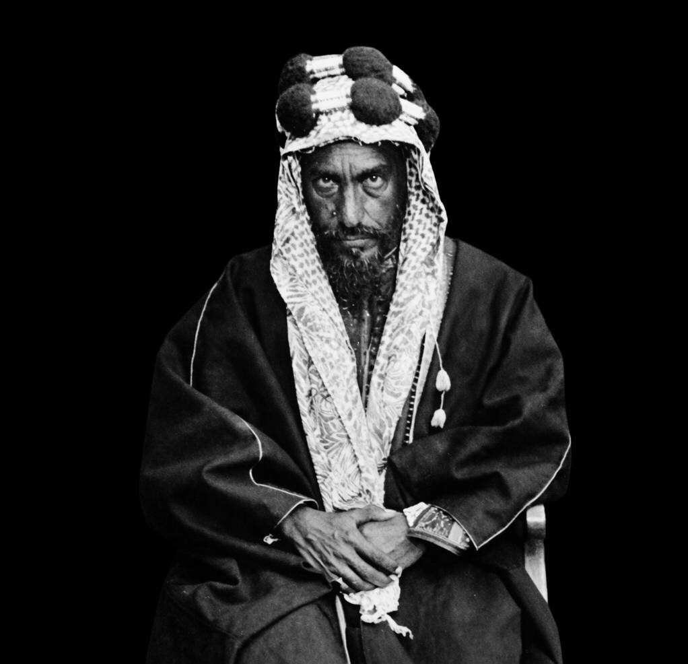
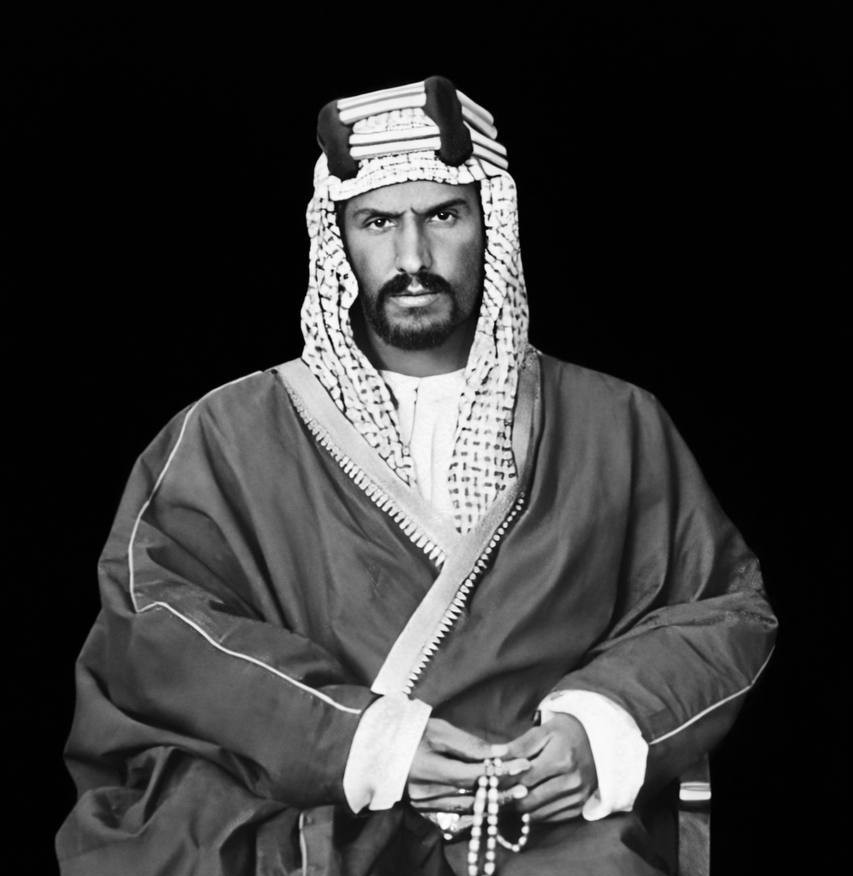
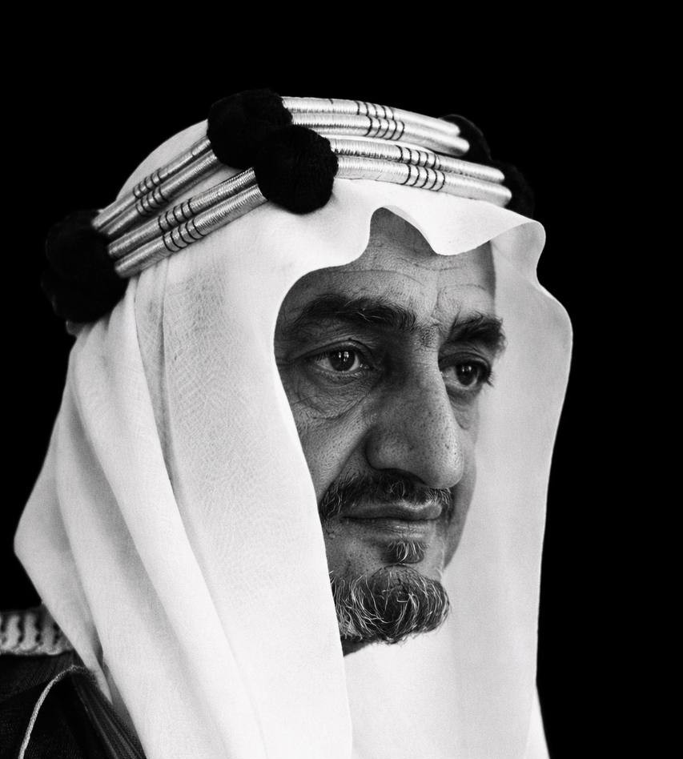
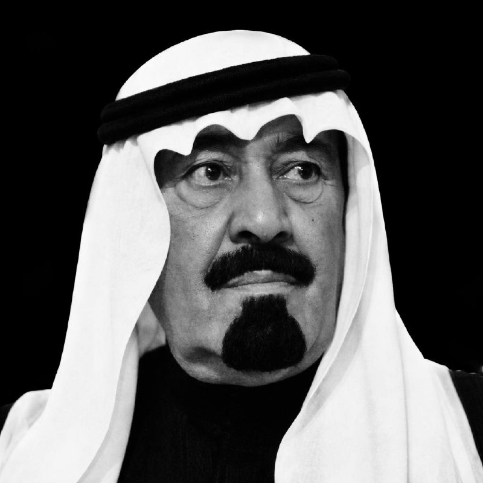
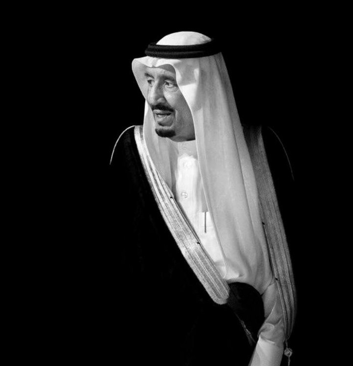

من الدولة السعودية الأولى إلى الدولة السعودية الثالثة (الحالية)

مؤسس الدولة السعودية الأولى واتخذ الدرعية عاصمة لها.

واصل توسيع نفوذ الدولة وتعزيز قوتها.

بلغت الدولة في عهده أقصى اتساعها.

آخر حكام الدولة السعودية الأولى.

مؤسس الدولة السعودية الثانية واتخذ الرياض عاصمة لها.
عزّز استقرار الدولة السعودية الثانية.
شهدت الدولة في عهده صراعات داخلية.

آخر حكام الدولة السعودية الثانية.

مؤسس المملكة العربية السعودية وموحدها.
اهتم بالتعليم والبنية التحتية.

دعم القضايا الإسلامية واستخدم سلاح النفط.
شهدت البلاد نهضة تنموية كبيرة.
توسعة الحرمين الشريفين وتطوير الدولة.

برنامج الابتعاث والمشاريع الاقتصادية الكبرى.

إطلاق رؤية السعودية 2030 والتحول الوطني.